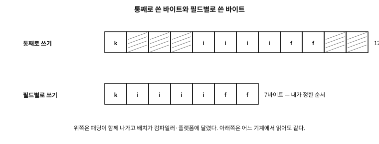

47 구조체를 부리는 법 — 임시 값, 이름 붙은 인자, 배치
먼저 알아야 할 것
돌아보기
46장에서 구조체는 값이라 대입하면 통째로 복사되고 함수에 넘기면 사본이 건너간다고 했다. 그런데 38장에서는 배열을 함수에 넘기면 포인터로 무너져 원본이 건드려진다고 했다. 두 말이 부딪히지 않는가 — 구조체 안에 배열이 있으면 어느 쪽인가?
답. 구조체가 이긴다. 배열이 포인터로 무너지는 것은 배열 그 자체를 인자로 적었을 때의 규칙이고, 구조체 멤버로 들어간 배열은 구조체라는 값의 일부라 복사 대상이다. 그래서 C에서 배열을 진짜로 값처럼 넘기는 유일한 방법이 “구조체로 감싸기”다. 이 장의 두 번째 예제가 그 대비를 실측으로 보인다 — 값으로 넘긴 쪽은 원본이 그대로이고, 포인터로 무너진 쪽은 원본이 바뀐다.
이 장의 필요성과 맥락
이 장이 끝나면
이 장에서 답할 질문
s.frame->size.y처럼 길게 이어진 표기는 어디서 끊어 읽는가?- 이 관용구에 함정은 없는가?
- 그러면 파일 형식을 처음부터 텍스트로 하면 되지 않는가?
- 그러면 파일 형식이나 통신 규약을 다룰 때는 packed 구조체를 쓰는 것이 정답인가?
47.1 중첩과 접근 — 점과 화살표를 섞어 읽기
구조체의 멤버가 또 구조체일 수 있다. 이때 표기는 겹쳐 적을 뿐이다.
struct point { int x, y; };
struct rect { struct point origin; struct point size; };
struct scene { struct rect *frame; const char *name; };
struct rect r = { .origin = { .x = 1, .y = 2 }, .size = { .x = 30, .y = 40 } };
struct scene s = { .frame = &r, .name = "main" };
r.origin.x /* 값 안의 값 : 점 + 점 */
s.frame->size.y /* 값 안의 포인터 : 점 + 화살표 + 점 */
(&r)->origin.y /* 화살표는 (*p).의 줄임일 뿐이다 */규칙은 하나뿐이다. 왼쪽이 값이면 점, 포인터면 화살표. p->x는 (*p).x의 줄임이고(46장), 줄임이 생긴 이유는 포인터로 구조체를 다루는 일이 압도적으로 흔해서다. 실제로 (*p).x라고 적힌 코드를 보면 대개 옛 코드이거나 연산자 우선순위를 설명하는 자리다.
문. s.frame->size.y처럼 길게 이어진 표기는 어디서 끊어 읽는가?
답. 왼쪽에서 오른쪽으로, 한 단계씩 내려간다. s(장면) → .frame(그 안의 포인터) → ->size(가리키는 사각형의 크기) → .y(그 점의 y). 각 화살표는 역참조가 한 번 일어난다는 표시이므로, 화살표의 개수만큼 널 검사가 필요한 포인터가 있다는 뜻이기도 하다. s.frame이 널이면 이 표기는 그 자리에서 무너진다 — 긴 사슬은 읽기 편한 만큼 검사를 감추기도 한다.
47.2 임시 구조체 — 복합 리터럴
이름 붙은 변수를 만들지 않고 그 자리에서 구조체 값을 하나 만드는 표기가 복합 리터럴이다(C99).
draw_((struct draw_opts){ .width = 40, .title = "차트" }); /* 인자로 바로 */
return (struct point){ .x = a.x + dx, .y = a.y + dy }; /* 반환값으로 */성질 세 가지를 챙긴다.
첫째, 이것은 lvalue다. 이름이 없을 뿐 진짜 객체라서 주소를 얻을 수 있고 멤버에 대입할 수도 있다. 예제의 &(struct draw_opts){ … }가 그 확인이다. “임시값(rvalue)이라 주소를 못 얻는다”고 생각하기 쉬운데, C의 복합 리터럴은 그렇지 않다 — C++의 임시 객체와 다른 점이다.
둘째, 수명은 문장이 아니라 블록 끝까지다. 블록 안에 적은 복합 리터럴은 그 블록이 끝날 때까지 산다(자동 저장 기간). 그래서 같은 블록 안에서는 주소를 들고 다녀도 안전하다.
셋째, 그러므로 함수 밖으로 주소를 내보내면 매달린 포인터다.
반례. 복합 리터럴의 주소를 반환하기
struct point *make(int x, int y)
{
return &(struct point){ .x = x, .y = y }; /* 함수가 끝나면 사라진다 */
}37장의 지역 변수 주소 반환과 정확히 같은 사고다. 값을 돌려주려면 값으로 돌려주거나(struct point make(...)), 호출자가 준 자리에 채우거나, 동적 할당(45장)을 쓴다. 파일 유효 범위에 적은 복합 리터럴은 정적 저장 기간이라 이 문제가 없지만, 그 자리에는 대개 이름을 붙이는 편이 낫다.
47.3 이름 붙은 인자 — 구조체 하나로 넘기기
examples/ch47/opts.c
/* 임시 구조체(복합 리터럴)로 "이름 붙은 매개변수"를 만들고,
구조체 복사가 배열 멤버까지 옮긴다는 사실을 확인한다. */
#include <stdio.h>
/* ── ① 이름으로 넘기는 매개변수 ─────────────────────────── */
struct draw_opts {
int width; /* 0 이면 기본값 80 */
int height; /* 0 이면 기본값 24 */
bool grid;
const char *title;
};
static void draw_(struct draw_opts o)
{
int w = o.width ? o.width : 80;
int h = o.height ? o.height : 24;
printf(" %3dx%-3d grid=%-5s title=%s\n", w, h,
o.grid ? "true" : "false", o.title ? o.title : "(none)");
}
/* 호출자가 중괄호를 적지 않아도 되게 감싼다 */
#define draw(...) draw_((struct draw_opts){ __VA_ARGS__ })
/* ── ② 배열을 값으로 넘기기 ─────────────────────────────── */
struct row { int cell[8]; }; /* 배열을 구조체로 감싸면 값이 된다 */
static int total(struct row r) /* 사본이 통째로 건너온다 */
{
int t = 0;
for (int i = 0; i < 8; i++) t += r.cell[i];
r.cell[0] = 999; /* 사본만 바뀐다 */
return t;
}
static int total_raw(int cell[8]) /* 배열 매개변수는 포인터로 무너진다 */
{
int t = 0;
for (int i = 0; i < 8; i++) t += cell[i];
cell[0] = 999; /* 원본이 바뀐다 */
return t;
}
int main(void)
{
puts("passing by name (any order, some may be left out)");
draw(.title = "chart", .height = 20, .width = 40);
draw(.grid = true);
draw(); /* 전부 기본값 */
/* 복합 리터럴은 주소를 얻을 수 있고, 수명은 이 블록의 끝까지다 */
struct draw_opts *p = &(struct draw_opts){ .width = 5, .title = "temporary" };
printf(" reaching it through the address of a compound literal: width=%d title=%s\n", p->width, p->title);
puts("\narrays by value / by pointer");
struct row r = { .cell = { 1, 2, 3, 4, 5, 6, 7, 8 } };
/* 호출과 원본 읽기를 반드시 갈라 적는다 - 한 표현식에 섞으면 순서가 없다 */
int t1 = total(r);
printf(" by value : sum %2d, after the call cell[0] = %d\n", t1, r.cell[0]);
int t2 = total_raw(r.cell);
printf(" by pointer: sum %2d, after the call cell[0] = %d\n", t2, r.cell[0]);
/* 구조체 대입도 통째 복사다 — 배열 멤버까지 */
struct row copy = r;
copy.cell[1] = -1;
printf(" after changing the assigned copy: original cell[1] = %d, copy cell[1] = %d\n",
r.cell[1], copy.cell[1]);
return 0;
}
실행 결과
passing by name (any order, some may be left out)
40x20 grid=false title=chart
80x24 grid=true title=(none)
80x24 grid=false title=(none)
reaching it through the address of a compound literal: width=5 title=temporary
arrays by value / by pointer
by value : sum 36, after the call cell[0] = 1
by pointer: sum 36, after the call cell[0] = 999
after changing the assigned copy: original cell[1] = 2, copy cell[1] = -1
여기서부터가 실무에서 코드를 가장 많이 바꾸는 관용구다. 인자가 대여섯 개인 함수를 생각해 보자.
draw(40, 20, false, true, 3, "차트"); /* 세 번째 참은 무엇인가? */C에는 다른 언어의 이름 붙은 인자(named argument)나 기본값이 없다. 그러나 지정 초기화 + 복합 리터럴을 겹치면 사실상 같은 것을 얻는다.
struct draw_opts { int width; int height; bool grid; const char *title; };
static void draw_(struct draw_opts o);
#define draw(...) draw_((struct draw_opts){ __VA_ARGS__ })
draw(.title = "차트", .height = 20, .width = 40); /* 순서 무관 */
draw(.grid = true); /* 나머지는 기본값 */
draw(); /* 전부 기본값 */얻는 것이 네 가지다.
- 순서에서 자유롭다. 지정 초기화는 이름으로 자리를 정하므로 호출자가 편한 순서로 적는다.
- 빠뜨린 것은 0이다. 적지 않은 멤버는 0(포인터는 널)으로 채워진다는 표준의 약속이 곧 “기본값”이 된다. 그래서 0이 뜻이 통하는 기본값이 되도록 필드를 설계하는 것이 요령이다 — 예제가
width == 0을 “기본 80” 으로 읽는 것이 그 예다. - 호출부가 자기 설명적이다. 위
false, true, 3이 무엇인지 묻지 않아도 된다. - 나중에 필드를 늘려도 기존 호출이 깨지지 않는다. 인자 목록을 바꾸면 모든 호출부를 고쳐야 하지만, 구조체에 멤버를 하나 더하는 것은 기존 호출부에 아무 영향이 없다(그 멤버는 0이 된다). 오래 유지되는 API에서 이 성질이 특히 값지다.
문. 이 관용구에 함정은 없는가?
답. 셋을 조심한다.
첫째, 초기화 항목들 사이의 평가 순서는 정해져 있지 않다. draw(.width = i++, .height = i)처럼 부수 효과를 섞으면 결과를 예측할 수 없다(20장). 인자에는 값만 적는다.
둘째, 0이 유효한 값인 필드가 있으면 “빠뜨림”과 “0을 지정함”을 구별할 수 없다. 그런 필드는 의미를 뒤집어 설계하거나(no_grid 대신 grid), 별도의 존재 표시 필드를 둔다.
셋째, 큰 구조체를 매번 만들어 넘기는 비용이다. 옵션 구조체는 대개 작아서 문제가 없지만, 커지면 const struct opts *로 받고 호출부에서 &(struct opts){ … }를 넘기는 변형을 쓴다 — 주소를 얻을 수 있다는 위 성질이 여기서 일한다.
실제 사례. 실무에서 만나는 이름 붙은 인자
이 무늬는 널리 쓰인다. 리눅스 커널의 여러 초기화 함수,struct sigaction(75장)이나 struct timespec처럼 표준·POSIX API가 옵션을 구조체로 받는 방식, 그래픽 라이브러리들의 ..._desc 구조체(예: 여러 GPU API의 ..._DESC)가 모두 같은 착상이다. “인자가 많아지면 구조체로 묶는다”는 것은 C에서 거의 관용이라 할 만하고, C99의 지정 초기화가 그것을 읽기 좋게 만들어 주었다.47.4 패딩 — 멤버 사이의 빈자리
examples/ch47/layout.c
/* 구조체의 배치 - 패딩, 재배열, 강제 정렬 */
#include <stddef.h>
#include <stdio.h>
struct loose { char a; int b; char c; }; /* 작은 것 사이에 큰 것 */
struct tight { int b; char a; char c; }; /* 큰 것부터 늘어놓기 */
#pragma pack(push, 1) /* 여기서부터 패딩 금지 */
struct packed { char a; int b; char c; };
#pragma pack(pop) /* 원래 규칙으로 복귀 */
struct cacheline { alignas(64) int counter; }; /* 강제로 넓게 정렬 */
struct nested { struct loose inner; int tag; };
static void report(const char *name, size_t size, size_t align,
size_t oa, size_t ob, size_t oc)
{
printf("%-8s size %2zu align %2zu offsets a=%zu b=%zu c=%zu\n",
name, size, align, oa, ob, oc);
}
int main(void)
{
report("loose", sizeof(struct loose), alignof(struct loose),
offsetof(struct loose, a), offsetof(struct loose, b), offsetof(struct loose, c));
report("tight", sizeof(struct tight), alignof(struct tight),
offsetof(struct tight, a), offsetof(struct tight, b), offsetof(struct tight, c));
report("packed", sizeof(struct packed), alignof(struct packed),
offsetof(struct packed, a), offsetof(struct packed, b), offsetof(struct packed, c));
printf("\ncacheline size %zu align %zu\n",
sizeof(struct cacheline), alignof(struct cacheline));
printf("nested size %zu inner offset %zu tag offset %zu\n",
sizeof(struct nested), offsetof(struct nested, inner),
offsetof(struct nested, tag));
/* 멤버 세 개의 크기 합과 구조체 크기의 차이 = 패딩 바이트 수 */
size_t members = sizeof(char) + sizeof(int) + sizeof(char);
printf("\nloose: members %zu, actual %zu -> padding %zu bytes\n",
members, sizeof(struct loose), sizeof(struct loose) - members);
return 0;
}
실행 결과
loose size 12 align 4 offsets a=0 b=4 c=8
tight size 8 align 4 offsets a=4 b=0 c=5
packed size 6 align 1 offsets a=0 b=1 c=5
cacheline size 64 align 64
nested size 16 inner offset 0 tag offset 12
loose: members 6, actual 12 -> padding 6 bytes
46장에서 패딩의 세 규칙을 보았다 — 멤버는 자기 정렬의 배수 자리에, 구조체의 정렬은 멤버 정렬의 최댓값, 크기는 그 배수로 올림. 이 장의 예제가 그 규칙을 다시 확인해 준다: char·int·char의 합은 6인데 구조체는 12바이트이고, 큰 것부터 늘어놓은 tight은 8바이트다.
여기서는 그 다음 질문으로 간다 — 패딩이 있다는 사실이 실무에서 무엇을 금지 하는가.
흔한 오해. “패딩 바이트에는 0이 들어 있다”
아니다. 패딩의 값은 정해져 있지 않다. 초기화로 0이 들어갈 수도, 이전에 그 자리를 쓰던 값이 남아 있을 수도 있다. 여기서 세 가지 실무 함정이 나온다.
memcmp로 구조체를 비교하면 안 된다(65장) — 값이 같아도 패딩이 달라 “다르다”가 나올 수 있다. 멤버별로 비교한다.- 구조체를 통째로 해시하면 안 된다 — 같은 이유로 같은 값이 다른 해시를 낸다.
- 구조체를 그대로 파일이나 네트워크로 내보내면 안 된다 — 패딩의 쓰레기 값이 함께 나가고(정보 누출이 되기도 한다), 받는 쪽의 배치가 다르면 해석도 어긋난다.
구조체 대입(b = a;)이 패딩까지 복사하는지도 표준이 약속하지 않는다. 의미 있는 것은 멤버뿐이라고 기억하면 전부 설명된다.
47.5 통째로 저장하거나 보내면 안 되는 이유
가장 짧아 보이는 코드가 있다.
fwrite(&record, sizeof record, 1, f); /* 구조체를 통째로 파일에 */
send(sock, &record, sizeof record, 0); /* 통째로 네트워크에 */한 줄이면 되는데, 이 한 줄이 이 책에서 가장 자주 사고를 내는 줄 중 하나다. 이유가 넷이고, 넷이 서로 독립적이다.
| 무엇이 문제인가 | 결과 |
|---|---|
| 패딩의 값이 정해져 있지 않다 | 내보낸 적 없는 쓰레기가 함께 나간다 — 정보 누출이 되기도 한다 |
| 배치가 컴파일러·옵션·플랫폼마다 다르다 | 같은 소스로 만든 두 프로그램이 다른 바이트를 주고받는다 |
| 바이트 순서(엔디안)가 다르다 | 0x01020304가 저쪽에서는 0x04030201이 된다(48장) |
| 타입의 크기가 다르다 | long·size_t·포인터·열거체가 32비트와 64비트에서 다르다 |
표 47.1
examples/ch47/serialize.c
/* 구조체를 통째로 저장하면 무엇이 함께 나가는가 — 그리고 올바른 직렬화. */
#include <stdint.h>
#include <stdio.h>
#include <string.h>
struct record {
uint8_t kind; /* 1바이트 */
uint32_t id; /* 4바이트 — 4의 배수 자리에 놓여야 한다 */
uint16_t flags; /* 2바이트 */
};
static void dump(const char *label, const unsigned char *b, size_t n)
{
printf(" %-16s", label);
for (size_t i = 0; i < n; i++) printf(" %02X", b[i]);
printf(" (%zu bytes)\n", n);
}
/* ── 올바른 방법: 바이트 순서를 내가 정한다 ─────────────────────
고정 폭 타입을 하나씩, 정해진 순서(여기서는 빅 엔디안)로 적는다.
패딩이 끼어들 자리가 없고, 어느 기계에서 읽어도 같은 뜻이 된다. */
static size_t put_u8(unsigned char *p, uint8_t v) { p[0] = v; return 1; }
static size_t put_u16(unsigned char *p, uint16_t v)
{ p[0] = (unsigned char)(v >> 8); p[1] = (unsigned char)v; return 2; }
static size_t put_u32(unsigned char *p, uint32_t v)
{
p[0] = (unsigned char)(v >> 24); p[1] = (unsigned char)(v >> 16);
p[2] = (unsigned char)(v >> 8); p[3] = (unsigned char)v;
return 4;
}
static size_t encode(unsigned char *out, const struct record *r)
{
size_t n = 0;
n += put_u8(out + n, r->kind);
n += put_u32(out + n, r->id);
n += put_u16(out + n, r->flags);
return n;
}
static int decode(const unsigned char *in, size_t len, struct record *r)
{
if (len < 7) return 0; /* 길이부터 검증한다 */
r->kind = in[0];
r->id = (uint32_t)in[1] << 24 | (uint32_t)in[2] << 16
| (uint32_t)in[3] << 8 | (uint32_t)in[4];
r->flags = (uint16_t)((uint16_t)in[5] << 8 | in[6]);
return 1;
}
int main(void)
{
printf("struct record: sizeof = %zu (members add up to %zu)\n\n",
sizeof(struct record),
sizeof(uint8_t) + sizeof(uint32_t) + sizeof(uint16_t));
/* 이 자리를 쓰던 값이 남아 있는 상황을 흉내 낸다 —
스택의 구조체는 실제로 이렇게 '앞사람의 쓰레기' 위에 놓인다. */
struct record r;
memset(&r, 0xAA, sizeof r); /* 자리를 더럽혀 두고 */
r.kind = 1; r.id = 0x01020304; r.flags = 0x0506; /* 멤버만 채운다 */
puts("[dumping it whole]");
dump("bytes", (const unsigned char *)&r, sizeof r);
puts(" -> where you see AA is padding. Nobody set those bytes, and out they go.");
puts(" (faked here, but in reality uninitialized bytes leak just like this)");
puts("\n[serializing field by field]");
unsigned char buf[16];
size_t n = encode(buf, &r);
dump("bytes", buf, n);
puts(" -> no padding, and the order is mine to choose (big endian here).");
struct record back;
if (decode(buf, n, &back))
printf(" reading it back: kind=%u id=0x%08X flags=0x%04X - %s\n",
back.kind, back.id, back.flags,
(back.kind == r.kind && back.id == r.id && back.flags == r.flags)
? "same as the original" : "different");
puts("\n[same values - so why is comparing the whole thing dangerous]");
struct record a, b;
memset(&a, 0x00, sizeof a);
memset(&b, 0xFF, sizeof b); /* 패딩만 다르게 */
a.kind = b.kind = 1; a.id = b.id = 42; a.flags = b.flags = 7;
printf(" every member is equal. memcmp = %d <- nonzero means 'different'\n",
memcmp(&a, &b, sizeof a) != 0 ? 1 : 0);
puts(" which is why structs are compared member by member.");
return 0;
}
실행 결과
struct record: sizeof = 12 (members add up to 7)
[dumping it whole]
bytes 01 AA AA AA 04 03 02 01 06 05 AA AA (12 bytes)
-> where you see AA is padding. Nobody set those bytes, and out they go.
(faked here, but in reality uninitialized bytes leak just like this)
[serializing field by field]
bytes 01 01 02 03 04 05 06 (7 bytes)
-> no padding, and the order is mine to choose (big endian here).
reading it back: kind=1 id=0x01020304 flags=0x0506 - same as the original
[same values - so why is comparing the whole thing dangerous]
every member is equal. memcmp = 1 <- nonzero means 'different'
which is why structs are compared member by member.
시연의 첫 부분이 첫 번째 이유를 눈으로 보인다. 구조체가 놓일 자리를 0xAA로 더럽혀 두고 멤버만 채웠더니, 통째로 인쇄한 바이트 사이에 AA가 그대로 남아 있다. 멤버에는 손을 댔지만 패딩에는 대지 않았기 때문이다.

그림 47.1 — 위는 패딩까지 나가는 12바이트, 아래는 내가 정한 순서의 7바이트다.
47.5.1 그래서 어떻게 하는가 — 필드별 직렬화
처방은 하나다. 바이트 순서를 내가 정하고, 고정 폭 타입을 하나씩 적는다.
시연의 encode가 그 형태다. 요령이 넷 있다.
- 고정 폭 타입을 쓴다 —
uint8_t·uint16_t·uint32_t(26·27장).int나long은 크기가 플랫폼에 달렸다. - 바이트 순서를 코드에 적는다. 시연은 빅 엔디안(네트워크 바이트 순서)으로 적었다. 시프트와 마스크로 적으면 돌아가는 기계의 엔디안과 무관하게 같은 바이트가 나온다.
- 길이를 먼저 적는다. 문자열이나 배열은 「길이 + 바이트」로. 받는 쪽이 얼마나 읽어야 하는지 알아야 한다.
- 읽는 쪽은 검증한다. 시연의
decode가 길이부터 본다 — 모자란 입력에 손대지 않는 것이 첫 방어선이다.
이렇게 하면 얻는 것이 분명하다. 바이트 수가 12에서 7로 줄고(패딩이 없다), 어느 기계에서 읽어도 같은 값이 나오고, 형식이 코드에 적혀 있어 나중에 읽을 수 있다.
실제 사례. 패딩이 새어 나간 사고 — 커널의 오래된 골칫거리
운영체제 커널은 구조체를 사용자 프로그램에 건네는 일이 잦다(시스템 호출의 결과, 소켓 정보 등). 그때 커널이 멤버만 채우고 통째로 복사하면, 패딩에 남아 있던 커널 기억의 조각이 그대로 사용자에게 건너간다.
이것이 「커널 정보 누출」(kernel information leak)이라 불리는 취약점 부류이고, 리눅스·BSD 계열에서 같은 종류의 수정이 여러 해에 걸쳐 반복해서 나왔다. 새어 나가는 양은 몇 바이트지만, 그 안에 주소가 들어 있으면 주소 무작위화(ASLR)를 무력화하는 실마리가 된다.
그래서 커널 코드에는 규율이 생겼다 — 사용자에게 건널 구조체는 먼저 통째로 0으로 채운다(memset). 이 책의 표현으로 옮기면 「표현의 층을 명시적으로 정해 둔다」이다. 46장에서 본 { 0 } 초기자가 같은 일을 더 안전하게 한다.
교훈은 응용 프로그램에도 그대로 온다 — 구조체를 밖으로 내보내는 자리에서는 무엇이 나가는지 바이트 단위로 알아야 한다.
반례. 구조체를 그대로 파일에 저장하기
struct config c = { .port = 8080, .timeout = 30 };
fwrite(&c, sizeof c, 1, f); /* 저장 */
...
fread(&c, sizeof c, 1, f); /* 다음 판에서 읽기 */세 가지가 어긋난다. 프로그램을 다른 컴파일러로 다시 빌드하면 배치가 달라져 옛 파일을 읽지 못한다. 32비트에서 만든 파일을 64비트에서 읽으면 크기가 어긋난다. 그리고 구조체에 멤버를 하나 더하는 순간 옛 파일이 전부 못 쓰게 된다.
마지막 것이 특히 아프다 — 형식을 바꿀 여지가 없다. 필드별 직렬화는 여기에 답이 있다: 앞에 판 번호를 적어 두고, 읽는 쪽이 판에 따라 갈라 읽는다.
문. 그러면 파일 형식을 처음부터 텍스트로 하면 되지 않는가?
답. 많은 경우 그것이 정답이다. JSON·INI·CSV 같은 텍스트 형식은 엔디안도 패딩도 타입 크기도 문제 되지 않고, 사람이 눈으로 읽어 고칠 수 있다. 90장에서 간이 JSON을 세 판으로 짜 보는 것도 그래서다.
이진 형식이 필요한 자리는 분명하다 — 양이 많거나(텍스트는 몇 배로 커진다), 속도가 급하거나(파싱 비용), 형식이 이미 정해져 있을 때(통신 규약, 파일 포맷). 그때도 규칙은 같다: 바이트 배치를 내가 정해서 적는다.
덧붙이면, 이진 형식을 직접 설계하지 않고 이미 있는 것을 쓰는 길도 있다 — 프로토콜 버퍼·CBOR·플랫버퍼 같은 것들이다. 이 책은 이름만 적어 둔다. 어느 쪽을 택하든 「통째로 쓰기」만은 피한다.
47.6 패딩을 없애는 법, 정렬을 강제하는 법
패딩이 곤란한 자리가 분명히 있다 — 파일 형식이나 통신 규약처럼 바이트 배치가 바깥에서 정해진 경우다. 그래서 구현들은 패딩을 끄는 장치를 제공한다.
플랫폼 노트. packed 와 pragma pack — 표준이 아니다
#pragma pack(push, 1) /* MSVC·GCC·Clang 공통으로 널리 쓰인다 */
struct header { char kind; int length; };
#pragma pack(pop) /* 반드시 되돌린다 */
struct header2 { char kind; int length; } __attribute__((packed)); /* GCC·Clang */둘 다 표준 C가 아니다. 예제에서 #pragma pack(1)은 6바이트, 정렬 1의 구조체를 만들었다. push/pop을 짝지어 쓰지 않으면 그 뒤에 포함되는 헤더의 구조체 배치까지 바뀌어, 라이브러리와 배치가 어긋나는 고약한 버그가 난다 — 헤더 안에서 pack 을 열어 둔 채 끝내지 않는 것이 대표적 사고다.
반례. packed 구조체의 멤버 주소를 넘기기
struct __attribute__((packed)) h { char k; int len; };
void take(int *p);
take(&s.len); /* 정렬되지 않은 주소 — 계약 밖이다 */packed 구조체의 멤버는 정렬이 어긋난 자리에 있을 수 있다. 그 주소를 평범한 int *로 넘기면, 받는 쪽은 정렬을 가정하고 접근한다 — 관대한 기계(x86) 에서는 느려질 뿐이지만 엄격한 기계에서는 그 자리에서 죽는다(6장). GCC와 Clang은 이 자리에 -Waddress-of-packed-member 경고를 낸다.
값을 읽는 것(int n = s.len;)은 컴파일러가 바이트를 모아 처리해 주므로 안전하다. 주소를 새는 것이 문제다.
정렬을 강제하는 반대 방향의 도구도 있고, 이쪽은 C23의 표준 낱말이다(82장).
struct cacheline { alignas(64) int counter; }; /* 64바이트 경계에 */예제에서 이 구조체는 크기 64, 정렬 64가 됐다. 쓰는 자리가 분명하다 — 11장에서 본 거짓 공유(false sharing)를 피하려고 갈래마다 다른 캐시 라인에 카운터를 두거나, DMA·SIMD처럼 하드웨어가 정렬을 요구하는 경우다. 다만 공짜가 아니다: 위 구조체는 int 하나를 담으려고 64바이트를 쓴다.
문. 그러면 파일 형식이나 통신 규약을 다룰 때는 packed 구조체를 쓰는 것이 정답인가?
답. 더 안전한 정답이 따로 있다. 바이트 열과 구조체 사이를 손으로 옮기는 것 이다.
/* 읽기: 버퍼에서 필드를 하나씩 꺼낸다 */
uint32_t len;
memcpy(&len, buf + 1, sizeof len);
len = le32toh(len); /* 엔디안까지 명시한다 (5장) */packed 구조체를 버퍼에 겹쳐 놓는 방식(struct h *p = (struct h *)buf;)은 세 가지를 한꺼번에 가정한다 — 패딩 없음, 정렬 맞음, 엔디안 같음. 그중 하나만 어긋나도 조용히 깨지고, 게다가 타입을 갈아 끼우는 접근은 별칭 규칙 (52장)에도 걸린다. 필드별 memcpy는 길지만 세 가정을 전부 코드에 드러낸다. 제12부의 라이브러리가 하는 일도 바로 이 지루한 작업을 한 자리에 모으는 것이다.
47.6.1 alignas — 다섯째 갈래, 정렬 지정자
방금 쓴 alignas 는 이 책에서 처음 제대로 소개하는 낱말이다. 26장에서 선언 앞자리에 올 수 있는 것을 다섯 갈래로 갈랐는데, 그중 마지막 갈래가 이것이다 — 정렬 지정자(alignment specifier). 갈래에 속한 낱말은 alignas 하나뿐이다.
| 꼴 | 뜻 | 보기 |
|---|---|---|
alignas(상수식) | 그 바이트 경계에 맞춘다 — 2의 거듭제곱이어야 한다 | alignas(64) int c; |
alignas(타입) | 그 타입이 요구하는 만큼 맞춘다 — alignas(alignof(T)) 와 같다 | alignas(double) char c; |
표 47.2
짝이 되는 alignof 는 지정자가 아니라 연산자다. sizeof 처럼 타입을 물어 그 정렬 요구를 상수로 돌려준다. C11 에서는 _Alignas·_Alignof 였고 <stdalign.h> 가 소문자 이름을 매크로로 얹어 주었는데, C23 부터는 alignas·alignof 자체가 키워드라 헤더 없이 쓸 수 있다(82장).
★ 규칙 하나가 중요하다. 정렬은 올릴 수만 있고 낮출 수 없다. 타입이 8바이트 정렬을 요구하는데 1을 달라고 하면 컴파일러가 거부한다.
alignas(1) double d; → error: '_Alignas' specifiers cannot reduce alignment of 'd'당연한 요구다. 정렬은 취향이 아니라 하드웨어와 ABI 가 정한 계약이고(6·37장), 낮추는 순간 그 자리에서 죽거나 조용히 느려진다.
붙일 수 없는 자리도 셋 있고, 셋 다 컴파일러가 잡는다.
| 금지된 자리 | 컴파일러의 말 |
|---|---|
| 함수 매개변수 | alignment specified for parameter 'x' |
typedef | alignment specified for typedef 'T' |
| 비트필드 | alignment specified for bit-field 'x' |
표 47.3
★ typedef 에 못 붙는다는 것이 특히 뜻깊다. 정렬은타입의 성질이 아니라 그선언에 붙는 성질이라는 뜻이기 때문이다. 한정자(const)가 타입의 일부라 typedef const int ci; 가 되는 것과 정확히 대비된다(26장). 어떤 타입이 늘 큰 정렬을 갖게 하려면 지정자가 아니라 구조체로 감싸야 한다 — 이 절 앞의 struct cacheline 이 그 방법이다.
47.7 이름 없는 멤버와 container_of
두 가지 작은 장치를 더 챙긴다. 둘 다 실무 코드에서 자주 만나는데, 문법만 보면 왜 있는지 알기 어려운 것들이다.
examples/ch47/container_of.c
/* 익명 멤버와 container_of — 멤버의 주소에서 바깥 구조체를 되찾는다. */
#include <stddef.h>
#include <stdio.h>
/* 침습적 목록의 고리. 이 자체로는 아무 뜻이 없다 — 남의 구조체에 박힌다. */
struct link { struct link *next; };
/* C11 의 익명 멤버: 이름 없는 구조체·공용체의 멤버를 바깥에서 바로 쓴다 */
struct tagged {
unsigned kind;
union { /* ← 이름이 없다 */
int i;
double d;
};
};
struct task {
const char *name;
int priority;
struct link node; /* 목록에 매달리는 고리 */
};
/* 멤버의 주소 − 그 멤버의 오프셋 = 바깥 구조체의 주소.
리눅스 커널의 container_of 가 이 한 줄이다. */
#define CONTAINER_OF(ptr, type, member) \
((type *)(void *)((char *)(ptr) - offsetof(type, member)))
int main(void)
{
puts("[anonymous members]");
struct tagged t = { .kind = 1, .i = 42 };
printf(" t.kind = %u, t.i = %d <- written t.i, not t.u.i\n",
t.kind, t.i);
printf(" sizeof(struct tagged) = %zu\n", sizeof t);
puts("\n[container_of]");
struct task a = { .name = "compile", .priority = 3 };
struct task b = { .name = "link", .priority = 1 };
a.node.next = &b.node;
b.node.next = nullptr;
/* 목록은 고리만 안다. 고리에서 작업을 되찾는다. */
printf(" offsetof(struct task, node) = %zu\n", offsetof(struct task, node));
struct task *expect[] = { &a, &b };
size_t i = 0;
for (struct link *p = &a.node; p; p = p->next, i++) {
struct task *task = CONTAINER_OF(p, struct task, node);
printf(" task recovered from the link: \"%s\" (priority %d) - same address as the original: %s\n",
task->name, task->priority, task == expect[i] ? "yes" : "no");
}
puts("\n the link knows nothing about the data, so the same list code fits any struct");
puts(" - the intrusive list of part 12 stands on this one line.");
return 0;
}
실행 결과
[anonymous members]
t.kind = 1, t.i = 42 <- written t.i, not t.u.i
sizeof(struct tagged) = 16
[container_of]
offsetof(struct task, node) = 16
task recovered from the link: "compile" (priority 3) - same address as the original: yes
task recovered from the link: "link" (priority 1) - same address as the original: yes
the link knows nothing about the data, so the same list code fits any struct
- the intrusive list of part 12 stands on this one line.
47.7.1 익명 구조체·공용체 (C11)
구조체 안에 이름 없는 구조체나 공용체를 둘 수 있다. 그러면 그 멤버를 바깥에서 바로 쓴다.
struct tagged {
unsigned kind;
union { int i; double d; }; /* 이름이 없다 */
};
struct tagged t = { .kind = 1, .i = 42 };
t.i = 43; /* t.u.i 가 아니다 */태그 붙은 공용체(48장)에서 특히 읽기 좋아진다 — t.u.i의 u는 아무 뜻도 없는 이름이었기 때문이다. 다만 이름이 없으므로 그 공용체만 따로 넘길 수는 없다.
47.7.2 container_of — 멤버에서 바깥을 되찾기
offsetof가 「멤버가 몇 번째 바이트에서 시작하는가」를 알려 주므로, 반대 셈도 할 수 있다.
#define CONTAINER_OF(ptr, type, member) \
((type *)(void *)((char *)(ptr) - offsetof(type, member)))멤버의 주소에서 그 오프셋만큼 빼면 바깥 구조체의 주소다. 리눅스 커널의 container_of가 이 한 줄이고, 침습적 자료구조가 여기서 나온다 — 목록의 고리는 자기가 어떤 구조체에 박혀 있는지 모르지만, 고리에서 그 구조체를 되찾을 수 있다.
시연이 그것을 보인다. struct link 하나로 어떤 구조체든 목록에 매달 수 있고, 목록 코드는 자료의 타입을 알 필요가 없다. 제12부의 침습적 목록이 이 위에 선다.
플랫폼 노트. 이 매크로가 밟고 있는 자리
container_of는 널리 쓰이지만 표준이 보장하는 형태는 아니다. char *로 캐스트해 빼는 산술이 「그 구조체 객체 안에서」 일어난다는 것을 컴파일러가 알아야 하는데, 포인터의 출처(37장의 프로버넌스)를 따지면 회색지대가 남는다.
실무에서는 모든 주요 컴파일러가 이 무늬를 지원한다 — 커널이 이것 없이는 돌아가지 않기 때문이다. 다만 멤버가 실제로 그 구조체의 것이어야 한다. 엉뚱한 타입을 넘기면 아무 검사 없이 엉뚱한 주소가 나온다. C11의 _Generic이나 GCC의 typeof로 타입을 검사하는 판이 그래서 흔하다.
47.8 배열을 값으로 넘기기 — 되는가, 그리고 해야 하는가
예제 후반이 그 대비다. total(struct row r)는 사본을 받아 고쳤고 원본은 그대로였다(cell[0] = 1). total_raw(int cell[8])은 포인터로 무너져 원본을 고쳤다(cell[0] = 999). 대입 struct row copy = r; 역시 배열 멤버까지 통째로 복사한다.
그러므로 이렇게 정리된다. C에서 배열을 값 의미론으로 다루고 싶으면 구조체로 감싼다. 이것이 유일한 방법이고, 실제로 쓰이는 자리도 있다.
| 쓸 만한 자리 | 이유 |
|---|---|
작은 고정 크기 벡터·행렬(struct vec3, struct mat4) | 값처럼 계산하는 것이 자연스럽다 |
고정 크기 식별자·키(struct uuid { unsigned char b[16]; }) | 복사가 싸고 실수 여지가 없다 |
| 배열을 반환해야 할 때 | 배열은 반환할 수 없지만 구조체는 된다 |
| 불변으로 넘기고 싶을 때 | 사본이라 호출된 쪽이 원본을 못 건드린다 |
표 47.4
대가도 분명하다.
스택 사용량. 사본은 대개 호출된 함수의 스택 프레임에 놓인다. 16KiB짜리 구조체를 값으로 넘기면 호출 한 번에 그만큼이 더 쌓인다 — 실제로 재어 보면 호출 전후의 스택 위치가 구조체 크기만큼 벌어진다. 스택은 대개 8MiB 안팎이고 (37장), 재귀나 갈래마다 따로 잡히는 스택(78장)에서는 훨씬 작을 수 있다. 큰 구조체를 값으로 넘기는 재귀는 스택 넘침의 지름길이다.
복사 비용. 다만 “복사가 반드시 일어난다”고 말하면 부정확하다. 호출 규약이 정한다 — 작은 구조체(대개 두 워드 이하)는 레지스터로 건너가 복사랄 것이 없고, 큰 구조체는 호출자가 메모리에 만들어 그 주소를 숨겨 넘기는 방식이 흔하다. 게다가 함수가 인라인되면 컴파일러가 사본 자체를 없애 버릴 수도 있다. 그래서 정확한 문장은 이렇다: 의미는 언제나 복사이고, 실제 비용은 크기와 호출 규약과 최적화가 정한다.
흔한 오해. “구조체를 값으로 넘기면 항상 느리다”
크기에 달렸다. struct point { int x, y; }처럼 작은 것은 값으로 넘기는 편이 오히려 빠르고 읽기도 좋다 — 포인터를 넘기면 역참조가 생기고, 컴파일러가 “이 포인터로 누가 값을 바꿀 수 있다”고 의심해야 해서 최적화가 줄어든다.
실무의 어림 규칙은 이렇다. 두어 워드까지는 값으로, 그보다 크면 const 포인터로. 그리고 이 선택은 성능만의 문제가 아니라 계약의 문제이기도 하다 — 값으로 받으면 “원본을 건드리지 않는다”가 문법으로 보장되고, 포인터로 받으면 const로 약속할 뿐이다.
복습 정리
| 기억할 것 | 요지 |
|---|---|
| 접근 | 왼쪽이 값이면 ., 포인터면 ->(=(*p).) |
| 복합 리터럴 | (struct T){…} — lvalue이고 수명은 블록 끝 |
| 주소 반환 | 복합 리터럴의 주소를 함수 밖으로 내보내지 않는다 |
| 이름 붙은 인자 | 옵션 구조체 + 지정 초기화. 빠뜨린 멤버는 0 |
| 기본값 설계 | 0이 뜻이 통하는 기본값이 되게 필드를 정한다 |
| 패딩 | 정렬 때문에 생긴다. 값은 정해져 있지 않다 |
| 멤버 순서 | 큰 것부터 늘어놓으면 크기가 준다 |
memcmp·해시·직렬화 | 구조체를 통째로 다루지 않는다 |
pack | 표준 아님. push/pop 짝, 멤버 주소를 새지 않는다 |
alignas | 표준. 거짓 공유 회피·하드웨어 요구 |
| 배열을 값으로 | 구조체로 감싸면 된다. 스택과 크기를 함께 본다 |
표 47.5
구조체를 부리는 법을 익혔다. 다음 장은 같은 기억을 다른 눈으로 보는 장치 — 공용체와 표현의 세계다. 5장에서 예약해 둔 엔디안 관찰 시연이 드디어 열린다.